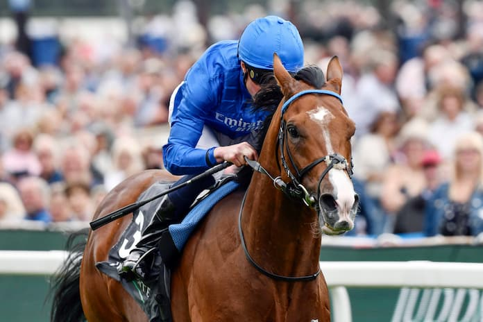

Ombudsman encabeza el cartel del Brigadier Gerard Stakes en Sandown
El hijo de Night of Thunder, penalizado con siete libras tras su última victoria, se medirá este jueves en el Grupo III británico a rivales de la talla de Arabian Light y Almeric sobre 1.850 metros en hierba.

Foto: media.dave.sport
Sandown Park acoge este jueves la disputa del The Star Sports Brigadier Gerard Stakes, prueba de Grupo III dotada con 95.000 libras que reunirá a seis ejemplares de cuatro años en adelante sobre 1.850 metros de recorrido en pista de hierba. La cita arrancará a las 19:12 horas locales con Ombudsman como principal atractivo del cartel.
El ejemplar del semental Night of Thunder afronta el compromiso con una penalización de siete libras tras su último triunfo, un lastre que añade incertidumbre a sus opciones. Entre sus rivales figuran nombres de entidad como Arabian Light, hijo de Kingman, y Almeric, engendrado por Study of Man. Completan el lote Bedouin Prince, Gethin —ambos por Ghaiyyath— y Wimbledon Hawkeye, retoño de Kameko.
El Brigadier Gerard Stakes forma parte del calendario de media distancia británico y supone una oportunidad para los especialistas del recorrido de consolidar su campaña en hierba antes de los grandes compromisos del verano.
— Redacción de Galope al Día